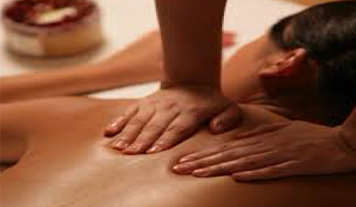

Prestations
-
 Reflexologie Plantaire
Reflexologie Plantaire -
 Reflexologie Auriculaire
Reflexologie Auriculaire -
Réflexologie dorsale et vertébrale
-
 Massage profond relaxant
Massage profond relaxant -
 Les Guashas
Les Guashas -
 Les Ventouses
Les Ventouses -
 Acuponcture sans aiguille
Acuponcture sans aiguille -
 Points de Knapp
Points de Knapp -
 LES MOXAS ou MOXIBUSTION
LES MOXAS ou MOXIBUSTION - Lors de la grossesse : éviter les zones endocrines et génitales.
- Personnes sous anticoagulants ; éviter l'utilisation des aiguilles.
- Premiers jours des menstruations
- Réactions allergiques importantes
- Déséquilibres psychologiques graves
- Réactions spasmophiles
- Urgences médicales et chirurgicales
- Pathologies sévères : insuffisances fonctionnelles sévères, cardiaque, hépatique rénale.
- Fractures
- Urgences médicales ou chirurgicales
- Femme enceinte
- Hernie discale, ne pas poser dessus.
- Femme enceinte, ne pas mettre sur le ventre.
- Fibrome, Tumeurs ne pas mettre sur la zone.
- Problème cardiaque et hypertension, ne pas appliquer près du cœur.
- Juste après le repas, ne pas mettre sur les intestins.
- Etat des jambes et des pieds : Manque d'hygiène, fracture, luxation, entorse …
- Phlébite
- Femme enceinte (avant le 3ème mois de grossesse)
- Phlébite
- Hémorragie
- Hématome
- Fracture
- Rupture ligamentaires, et de déchirure musculaire
- Plaie
- Brûlure
- Hernie discale qui sera évitée
- Pathologies relevant du domaine chirurgical
Réflexologie auriculaire
Il existe, selon la conception chinoise, au niveau du pavillon auriculaire, une projection des différentes parties du corps et des organes. Chaque oreille compte plus de points, ou zones réflexes, qui sont associés aux différentes parties du corps. Cette technique consiste à utiliser le pavillon de l'oreille, par stimulation de points ou zones réflexes. Particulièrement efficace pour lutter contre tous les désordres fonctionnels, les troubles du système nerveux, pour la prise de poids, l'asthme, les allergies, la dépression, la gynécologique, les phobies...
Principes de précaution ou contre-indication
Acuponcture sans aiguille
L'acupuncture sans aiguille consiste à localiser les points avec les doigts de la main ou avec un détecteur. Ces points de stimulation sont des endroits précis situés sur tout le corps, qui composent une sorte de trajet appelé les méridiens. En général, la majorité des gens ont une sensibilité au toucher du point, là où réside un déséquilibre..
Principes de précaution ou contre-indication
Massage profond relaxant
Le massage relaxant est l’un des meilleurs moyens naturels pour lutter contre le stress,
la fatigue nerveuse et physique de la vie quotidienne.
Libérant des tensions musculaires du dos, du cou et des épaules, le massage relaxant a
de nombreux effets positifs :
- Sur la structure et la posture du corps, qui, en se relâchant, assoupli ses muscles,
ce qui favorise la mobilité et l’amplitude des mouvements.
- Sur le fonctionnement de l’organisme qui, mieux oxygéné grâce à une circulation
sanguine plus fluide, favorise l’élimination des toxines.
- Sur les plans sensoriels et psychomoteurs car les sens, plus éveillés, favorisent
une plus grande circulation de l’énergie.
- Sur les plans psychologiques et émotionnel. Il accroît la conscience de ses
émotions, permet une meilleure gestion du stress et augmente l’estime de soi
ainsi que la compréhension de soi-même.
Principes de précaution ou contre-indication
Chez les personnes porteuses de prothèses de hanche ou d’épaule : certains mouvements seront évités. Lors de la grossesse : les mouvements seront adaptés en fonction de la période. Lors de poussées inflammatoires chez des personnes atteintes de troubles de santé importants Grossesses à risques
LES GUASHAS
Une technique ancestrale adaptée au monde moderne. On peut traduire Guasha par "faire sortir la maladie par frottement". Le guasha consiste à frotter, avec un instrument à bord lisse, la surface de la peau, là où réside une lésion sous-cutanée, ou un déséquilibre. C'est une méthode relaxante et agréable. Le guasha permet, pour un bénéfice immédiat et durable, de "chasser le vent", de réduire l'inflammation, d'éliminer le froid, et de soulager la douleur, qu'elle soit superficielle ou profonde.
Le massage guasha est utilisé pour de nombreux problèmes de santé, aigus et chroniques, aussi variés que : rhume, grippe, mal de tête, indigestion, vertige, douleur articulaire, fibromyalgie, coup de chaleur..
LES VENTOUSES
L'art ancestral de la pose des ventouses remonte à la chine antique. D'utilisation simple, elles ont
été utilisées par de nombreux peuples à travers les âges. Plus près de nous, à l'époque de nos
grands-mères, et arrières grands-mères, tous les foyers avaient leur propre jeu de ventouses. Il
était commun d'avoir recours à celles-ci, pour soulager divers maux du quotidien (affections
respiratoires, rhumatismales...).
La pose des ventouses utilisées à bon escient, est une méthode sûre. Ses résultats sont souvent
rapides et impressionnants car le corps réagit en quelques heures après la pose sur les sites
appropriés.
Le but de l'emploi de ventouses est de renforcer ou d'activer les potentiels d'auto guérison du
corps, quand ils n'agissent pas spontanément par eux-mêmes.
Les ventouses on l'effet de succion, qui favorise l'évacuation des agents pathogènes, la
circulation de l'énergie, du sang, et de la lymphe, pour débloquer la douleur, par un profond effet
antalgique.
Les ventouses sont souveraines pour soulager les pathologies "dites chaudes" : arthrite, sciatique,
tendinite, bronchite...
Le massage avec ventouses, réalise une synergie, alliant les techniques de massage, et le massage
aux ventouses stimule la circulation sur toute la surface traitée, activant le métabolisme et donc
la nutrition des tissus. De plus, il évacue toute la peau morte, augmentant ainsi la perméabilité et
la respiration de la peau.
Les effets du massage aux ventouses sur le muscle sont plus mécaniques : en stimulant le
drainage de sang et de lymphe, il stimule le métaboliste et a un effet positif sur l'organisme dans
son ensemble. La résistance de l'organisme est renforcée et l'autorégulation des fonctions
corporelles perturbées est enclenchée. Les ventouses permettent d'optimiser tout type de
massage. Le massage aux ventouses apporte une aide considérable à la détoxination du corps, et
des organes, au drainage des liquides organiques, à l'élimination de la cellulite et des surcharges.
Principes de précaution ou contre-indication
LES MOXAS ou MOXIBUSTION
La moxibustion est une méthode de santé chinoise, remontant à la plus haute antiquité.
Simple, à la portée de chacun, elle consiste à stimuler, par la chaleur obtenue, avec de
l’étoupe d’armoise, certaines zones et points du corps.
Les bienfaits de la moxibustion sont multiples : les moxas aident à renforcer l’énergie
vitale et le système immunitaire, à développer les globules blancs, à réchauffer le
corps, à chasser la fatigue et calmer les douleurs, soulager tous les petits maux de la vie
quotidienne et également, d’après la médecine traditionnelle chinoise, favoriser la
longévité.
Les moxas soulagent les pathologies dites froides : arthrose, fatigue chronique,
dermatologie, gynécologie....
Principes de précaution ou contre-indication
Réflexologie Plantaire
Histoire
C’est en 1930 qu’une physiothérapeute américaine du nom d’Eunice Ingham a mis au point la réflexologie. Utilisée en Inde et en Chine depuis des millénaires, elle est considérée comme étant un art sacré. La première école dédiée au développement de cette médecine naturelle a vu le jour en 1968 aux Etats-Unis. Depuis, cette pratique ne cesse d’accroître sa popularité auprès d’un large public, femmes et hommes réunis !
A qui s'adresse t-elle ?
Quels que soient votre activité, votre âge, ou votre état de santé, la Réflexologie s'adresse à tous, du bébé de quelques jours aux personnes âgées et permettra avant tout de se détendre, éliminer les tensions.
Ainsi, on remarque une amélioration voire une disparition des troubles issus du stress tels que, les troubles nerveux, digestifs, les troubles du transit, du sommeil, la fatigue…
Elle agit sur la circulation sanguine et lymphatique, permet l’élimination des toxines, soulage les douleurs musculaires..
Principes de précaution ou contre-indication
Points de Knapp
Mr Georgia Knap né en 1866 et décédé en 1946, a crée une technique de massage de points, se situant sur des émergences nerveuses. Il a présenté son travail en 1935 à l'académie de Médecine. Ces points de Knap sont chargés en toxines ils deviennent douloureux, ce qui facilite leur recherche. Cette technique permet de retrouver vitalité, énergie grâce à l’élimination rapide des déchets musculaires. La technique consiste à masser 18 points, soit avec le pouce, le majeur ou un outil (bâton, guasha). On peut également faire ce traitement avec des ventouses pneumatiques. , le simple fait de les masser, assure un bienfait profond en aidant à éliminer les toxines à détendre les zones de contractions musculaires et à renforcer l'énergie vitale pour revitaliser l'organisme.
Principes de précaution ou contre-indication
Réflexologie dorsale et vertébrale
Notre dos accumule quotidiennement le stress, le ras le bol, et mémorise les expériences difficiles, entraînant le blocage de certaines énergies, et certaines émotions. Ce massage permettra donc la stimulation et la revitalisation des organes, la fortification de l'ensemble du corps, et amènera à une grande détente.
Les Chinois ont développé les émotions liées à chaque organe du corps : chaque paires de nerfs rachidiens vont innerver les différents organes ce qui permet de dire, que chaque vertèbre correspond, en quelque sorte, à un ou plusieurs organes.
Cette réflexologie s'effectue sur le dos et s'appuie sur plusieurs référentiels
Le premier est musculaire, il sert à vider les toxines stockées dans le corps.
Le deuxième est vertébral, il agit sur les terminaisons nerveuses situées dans la colonne vertébrale.
Principes de précaution ou contre-indication
Les séances enfants sont plus courtes, la durée est adaptée en fonction de l'âge et de la technique utilisée.
Une séance inclut la réception et prise de congé de la personne.
En cas de retard, celui ci sera répercuté sur le temps de votre séance afin de ne pas pénaliser les autres personnes.